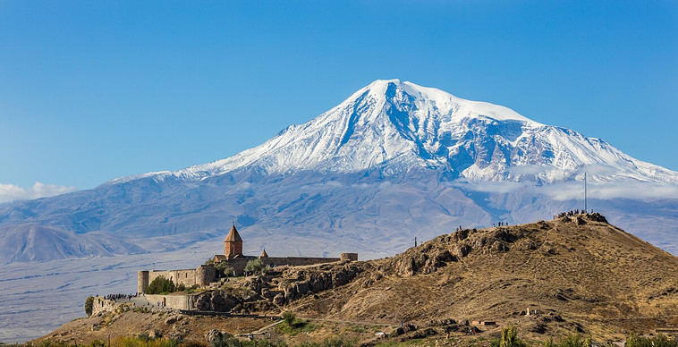

Armenia, officially the Republic of Armenia, is a small landlocked country in the South Caucasus region, situated between Europe and Asia. Despite its small size, it has played a vital role in history due to its geographical location and cultural significance.
Known as the first country to adopt Christianity as its state religion in 301 AD, Armenia is home to ancient churches and monasteries, such as the Etchmiadzin Cathedral, often referred to as the "Vatican of the Armenian Church."
Historically, Armenia was part of major empires, including the Persian, Roman, and Ottoman Empires. It has a legacy of resilience despite centuries of conflict and foreign domination. Mount Ararat, though now located in Turkey, remains a national symbol and holds deep cultural and religious significance for Armenians.
Armenia is bordered by Turkey to the west, Georgia to the north, Azerbaijan to the east, and Iran to the south. This strategic location has made it a crossroads of civilizations and trade routes for centuries.
Today, Armenia is a democratic nation, part of the Eurasian Economic Union (EAEU) and the Commonwealth of Independent States (CIS), while maintaining strong relations with the European Union and other global partners.